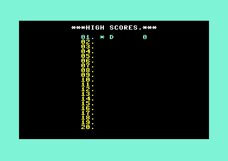

<meta charset="utf-8">
<meta name="viewport" content="width=device-width, initial-scale=1">
<title>{{title}}</title>
<link rel="preconnect" href="https://fonts.googleapis.com">
<link rel="stylesheet" href="https://fonts.googleapis.com/css2?family=Lato:wght@400;700;900&family=IBM+Plex+Mono:wght@400;500&display=swap">
<link rel="stylesheet" href="reference/jj-page.css">
<!-- tabs -->
<header class="hero">
  <p class="eyebrow">{{platform}} · {{year}} · {{publisher}}</p>
  <h1>{{title}}</h1>
  <p class="sub">A joystick in port 2 for play, and the number keys on the title screen. Nothing else on the keyboard does anything.</p>
</header>
<main class="wrap">
<section id="stick">
  <p class="fig">01 · Joystick</p>
  <h2 class="t">One stick, one button</h2>
  <p class="lede">The game reads only control port 2 (<code>$DC00</code>, at <a href="source.html#86AD"><code>read_stick</code></a>). A stick in port 1 does nothing.</p>
  <div class="table-scroll" role="region" aria-label="Joystick controls" tabindex="0"><table class="t">
    <tr><th>Stick</th><th>What Jumpman does</th></tr>
    <tr><td>left or right</td><td>walks 4 pixels a move, on green</td></tr>
    <tr><td>up or down</td><td>climbs 2 pixels a move, on blue at one of the level's ladders</td></tr>
    <tr><td>fire with right</td><td><a href="gameplay.html#jump">jumps</a> to the right</td></tr>
    <tr><td>fire with left</td><td>jumps to the left</td></tr>
    <tr><td>fire with up</td><td>jumps straight up</td></tr>
    <tr><td>fire alone, or with down</td><td>nothing</td></tr>
  </table></div>
  <p>A move comes once every few frames, as many as the <a href="gameplay.html#speed">run speed</a>. Ropes need no input: an up rope lifts Jumpman while he walks into it, and a down rope carries him down once he is on it (<a href="gameplay.html#floor">the floor</a>). A jump cannot be steered once it starts (<a href="source.html#A3B8"><code>start_jump</code></a>).</p>
</section>

<section id="keys">
  <p class="fig">02 · Keys</p>
  <h2 class="t">Numbers on the title, letters with the stick</h2>
  <p class="lede">The title screen asks for the number of players, 1 to 4, then for each player a run speed from 1 to 8. Those are the only keys the game reads.</p>
  <figure class="overview-shot"><figcaption>The title screen, waiting for the number of players.</figcaption></figure>
  <p>The game does not use the KERNAL's keyboard buffer. It lets the KERNAL scan the keyboard each frame, but points the decode step at its own routine (<a href="source.html#823E"><code>$823E</code></a>), and <a href="source.html#879E"><code>read_keys</code></a> keeps only the digits 1 to 9 from it. Each player's speed is shown as it is typed, with a blip (<a href="source.html#958D"><code>title</code></a>). After a game, a name for the <a href="gameplay.html#players">high-score table</a> is three letters, chosen with the stick up and down and taken with fire.</p>
  <figure class="overview-shot"><figcaption>The high-score table of twenty, with a new line taking its letters.</figcaption></figure>
</section>
</main>
<footer style="margin:16px 0 0;padding:22px var(--gx) 0;border-top:1px solid #e0ded8;font-family:'IBM Plex Mono',ui-monospace,Menlo,monospace;font-size:12px;color:#80838a"><a href="https://github.com/gamesexplained/gamesexplained" style="color:#1f5fa8;text-decoration:none">GitHub</a> · <a href="https://discord.gg/3V9GWyRDWV" style="color:#1f5fa8;text-decoration:none">Discord</a><br>© Games Explained contributors. Write-ups, facts and symbol maps are available under <a href="https://creativecommons.org/licenses/by-sa/4.0/" style="color:#1f5fa8;text-decoration:none">CC BY-SA 4.0</a>; code under <a href="https://opensource.org/licenses/MIT" style="color:#1f5fa8;text-decoration:none">MIT</a></footer>
